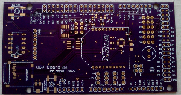

UGV Board v1.1
Unmanned Ground Vehicle board for the ChipKit Max32
The UGV board is my attempt to put together all the things I found useful in building my autonomous car and a few new features that I thought would be good to have. As always you can find the latest source files for all my work on my Github page. The goal was to build a board that will work well with my autonomous car setup but also have the ability to adapt for use in other autonomous robotics projects.
At the time of writing this the UGV v1.1 has the following features.
-
Onboard gyroscope
-
MicroSD card
-
Breakout for a GPS antenna
-
Breakout of an external LCD attached with the same ribbon connector used in the autonomous car
-
Xbee radio
-
Two breakouts designed for encoders with built-in hysteresis using 555 timers and LEDs to show each encoder tick
-
Breakout for four analog sensor pins. Powered off the +5V rail.
-
Breakout for six servo/esc pins powered off an externally supplied voltage (determined by the user) and a large low ESR capacitorto prevent large voltage drops

The un-assembled board. These were made using the OSH Park board printing service and turned out looking great. Below is the board after assembly. I went with 0402 (0.4 mm × 0.2 mm) for many of the SMT components which I found out is really pushing the limit of soldering without a microscope.

The good part is that everything works! (after a few small modifications...) I forgot to connect the CS and SDO pins on the gyroscope to the input voltage. The CS pin needs to be pulled high to select the I2C interface and the SDO pin needs to be pulled high to select the chips address, 105 in this case. I ended up having to hand solder a single copper strand from these pins to one of the nearby +3.3V vias to pull them up. You can see it sticking out from under the Xbee in the picture above. And for some reason the SD card holder's ground pins didn't get connected to the ground fill. Not sure how that happened but it was a pretty easy fix. I made a short video (below) showing the board working. The blue LEDs show each encoder tick. Toward the end of the video the LCD is showing the car's heading (corrected by the gyroscope) and interrupt counts from the wheel encoders.
Here's a schematic for the UGV Board (click for a larger image).
{kind=link}
Autonomous Car GUI
I've had a bit of free time while I waited for the boards to be printed. I decided to take that time to finally work on a GUI ground station to control the car from a laptop. I'd been a bit apprehensive to start on this portion of the project because I really knew almost nothing about making a GUI and the whole idea seemed a bit daunting to me but it's something that would make a great addition to the project. I decided to write the GUI using Processing since it’s pretty much just C++ code. It turned out looking great.
Below is a screen shot of the GUI. There's a still a lot of work to be done but I think I'm off to a good start. I've made a few changed to the autonomous car code to accommodate the new GUI. Here’s how the whole things works now.
After turning the car on it will
sit and wait until either a start button on the car is manually pushed or it receives a start character from the
laptop over the Xbee radios. Once the car is running it sends back data at a user defined time interval currently
set to 100 ms. A sync character is sent from the car to tell the computer that there’s a new data coming in.
On the other end the data gets parsed, stored into its appropriate variable and plotted.
I've got it set up to plot the velocity/acceleration calculated from the wheel encoders
and the distance from the waypoint on one graph. The lower graph shows the steering angle error or how far the
steering angle differs from the desired calculated angle. This will give a good visual for how well the PID gains are set up.
The numbers on the screen are actual test data being sent from the car using the Xbee radios just to check that the data parsing is working. I've also added in some sliders to adjust the PID settings on the car. The idea being that I could changed the gains based on how the steering error plot is looking. This would give me a much easier way to tune the PID algorithm as the car is running versus having to stop it and upload the firmware on the board for each change. I also plan on doing the same to control the car's speed. On the car's code I set up a timer interrupt to go off every 500 ms to check the serial line looking for new settings or watch for a stop command sent from the laptop. Since the car will be controlled only by the laptop I'm also planning on adding a radio signal connection/strength monitor. This will act as switch to shut the car off if it goes out of radio contact.
Comments !
comments powered by Disqus